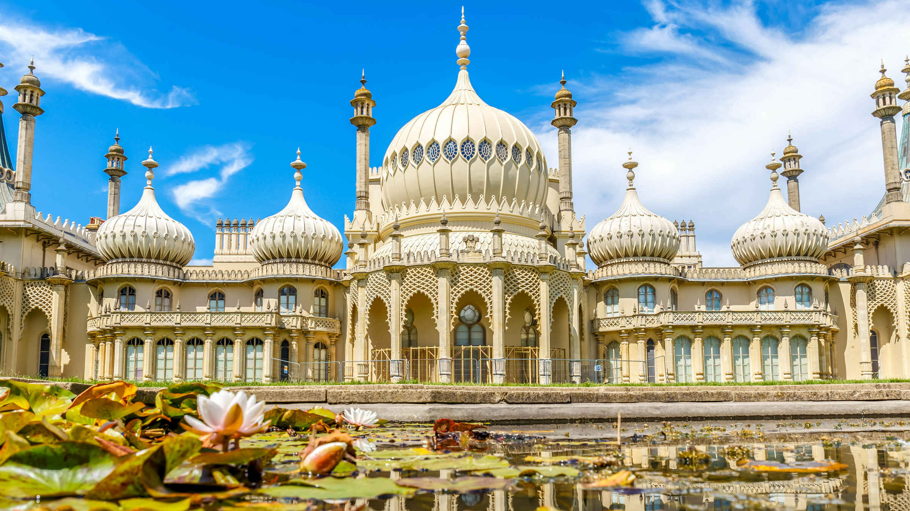

Royal Pavilion and Brighton Museum.
The first stop is the Royal Pavilion and Brighton Museum. This striking architecture is located in the center of Brighton. The architect John Nash was inspired by Indian Mogul style architecture. When on a tour you can see the Banqueting Room and the Royal Bedrooms. You can also treat yourself to some afternoon tea in the Royal Pavilion Tearoom. Another part of the Pavilion is the Brighton Museum Art Gallery, which is a collection of Art Deco pieces, costume galleries from the 18th century and the Willet Collection of porcelain and ceramics, there is also a gift shop. Next Stop
